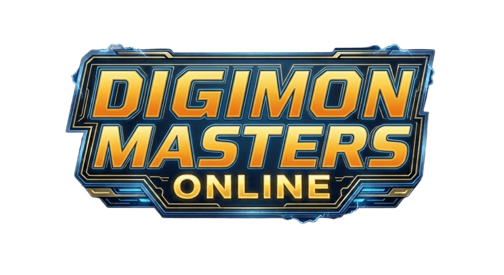

Home

Missões
-
-
-
Vila Yokohama
- Falar com a NPC Miki
- Dar scan e return nos itens da quest no NPC Pawnchessmon B
- Criar item (Digimon). Opções recomendadas: Piyomon, Tentomon, Renamon
- Chocar Digimon
- Falar com os NPCs Yushima e Mary
- Coletar 5 itens matando Kunemon
- Falar com os NPCs Miki e Gerente
- Comprar 10 águas na máquina de vendas
- Falar com a NPC Miki
- Matar 5 Elecmons e 2 BlackGarurumons
- Falar com a NPC Miki
- Falar com o NPC G. Neon
- Matar 5 Keramons e 2 Chrysalimons
- Falar com os NPCs Yushima e Richard (Dats Center)
Lago Silver
- Falar com Richard e fazer as quests amarelas
- Selecionar a quest vermelha. Você será transportado para Lago Silver
- Falar com Agumon
- Pegar a quest roxa no Patamon. Abra o mapa para ver a localização da exclamação roxa
- Pegar a quest roxa na Salamon
- Pegar a quest roxa no Armadimon
- Pegar a quest roxa no Jyureimon
- Ir para Floresta Silenciosa
Floresta Silenciosa
- Abrir a caixa de level 50, abrir a caixa que contém o Magnetic ID e equipá-lo
- Abrir a caixa Pacote Avatar de Jumping e equipar as roupas
- Pegar a quest roxa na Babamon
- Pegar a quest roxa no Jijimon
- Pegar a quest roxa na Babamon
- Falar com Elecmon
- Pegar a quest roxa no Leomon
- Ir para Sítio Histórico Perdido
Sítio Histórico Perdido
- Pegar a quest roxa no Hawkmon
- Pegar a quest roxa no Terriermon
- Pegar a quest roxa no Yukidarumon
- Pegar a quest roxa no Jyureimon
- Falar com Jijimon
- Falar com Babamon
- Invocar o Leomon, usar os buffs de ataque, defesa e vida e derrotá-lo. O item de invocação está no inventário
- Ir para Beira-Mar
Ilha Arquivo Beira Mar
- Falar com Tentomon e Gawappamon
- Matar 5 Silphymons
- Falar com Lopmon e pegar apenas a quest vermelha
- Matar 5 Rapidmons
- Falar com Lopmon
- Falar com Gatomon e pegar a quest vermelha
- Matar 5 MegaSeadramons
- Falar com Gatomon, Greymon e pegar a quest vermelha
- Matar 5 NeoDevimons
- Falar com Greymon e Leomon
- Invocar e derrotar o Monochromon. O item de invocação está no inventário
- Falar com Greymon e pegar a quest vermelha
- Falar com Gokimon, escolher um digimon e seguir para a Montanha Infinita
Montanha Infinita
- Falar com Elecmon
- Dropar 5 itens de qualquer Digimon deste mapa. Use todos os buffs, exceto os de EXP
- Falar com Elecmon no topo da Montanha Infinita
- Pegar a missão "Sobre a Fenda da Nova Dimensão"
- Pegar a missão "Localização da Fenda da Nova Dimensão"
- Pegar a missão "Pela Paz na Ilha dos Arquivos"
- Pegar a missão "Batalha Final"
- Ir para a esquerda, falar com Angemon e comprar uma Pena
- Falar com Elecmon no topo da Montanha Infinita
- Falar com Guru
- Ir para Beira-Mar
- Falar com Guru
- Falar com o Barco
- Ir para o Deserto do Continente Servidor
Deserto - 1
- Falar com Matt e Drimogemon
- Pegar 1 Colar matando o Drimogemon Chefe
- Falar com Mimi e Taichi
- Pegar 1 Luneta matando FanBeemon
- Falar com Taichi
- Usar a Luneta
- Falar com Taichi e Agumon
- Entrar na cidade e falar com Gazimon
- Falar com 3 NPCs, Patamon, Gazimon e Etemon
- Falar com T.K., Taichi e Agumon
- Falar com Taichi
- Matar 3 Gazimons
- Falar com Patamon, Koromon, Gazimon e Etemon
- Invocar e derrotar Etemon
- Falar com Koromon, Taichi, Gomamon e Mimi
Deserto - 2
- Falar com Taichi
- Dar 5 frutas para Agumon
- Falar com T.K.
- Usar a Luneta
- Falar com Taichi
- Ir para o Coliseu e falar com Taichi
- Matar 3 Greymons
- Invocar e derrotar SkullGreymon
- Falar com Koromon, Guru, Taichi, Agumon e Guru
- Matar 3 Devildramons
- Invocar e derrotar Etemon
- Falar com Taichi
- Ir para o Desfiladeiro do Continente Servidor
Desfiladeiro
- Falar com Taichi e Izzy
- Pegar 3 itens matando Psychemons
- Falar com Taichi, Izzy e T.K.
- Pegar 1 item matando PicoDevimon
- Falar com T.K., Taichi, Izzy e Piximon
- Matar 15 Roachmons
- Falar com Piximon, Matt e Taichi
- Pegar 1 item matando StrikeDramon e matar 5 StrikeDramons
- Falar com Piximon e Matt
- Falar com Piximon e Izzy
- Matar 5 Gazimons
- Falar com Izzy, Taichi e Sora
- Pegar 5 itens matando Cherrymons
- Falar com Sora e Izzy
- Ir para a Pirâmide do Continente Servidor
Pirâmide - 1
- Falar com Izzy e Taichi
- Falar com os NPCs
- Falar com Matt e Izzy
- Pegar 10 itens matando CyberDramons
- Falar com Izzy e Taichi duas vezes
- Falar com Matt e Izzy
- Pegar 3 itens matando VocaMons
- Falar com Izzy e Matt
- Matar 3 Monochromons
- Falar com Matt e Jou
- Ir para "Lugar para Provocar Etemon", invocar e derrotar Etemon
- Falar com Jou
- Falar com Izzy e pegar a quest vermelha
- Trocar de canal e entrar na DG no modo Easy
- Falar com Izzy dentro da DG
Pirâmide - 2
- Após falar com Izzy, derrotar Nanomon e Etemon, mas não sair da DG ainda
- Falar com Taichi e Sora dentro da DG e, em seguida, sair
- Falar com Taichi
- Invocar e derrotar Etemon
- Falar com Agumon
- Falar com Mimi
- Falar com Guru e pegar a quest vermelha
- Falar com Taichi
- Falar com Myotismon
- Falar com Taichi
- Falar com Guru
- Falar com Izzy
- Falar com Guru
- Ir para o Acampamento